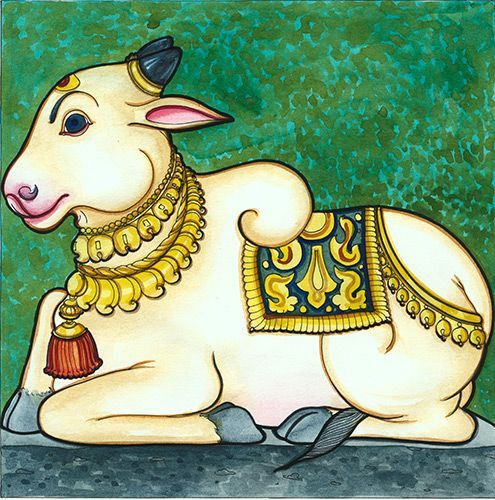
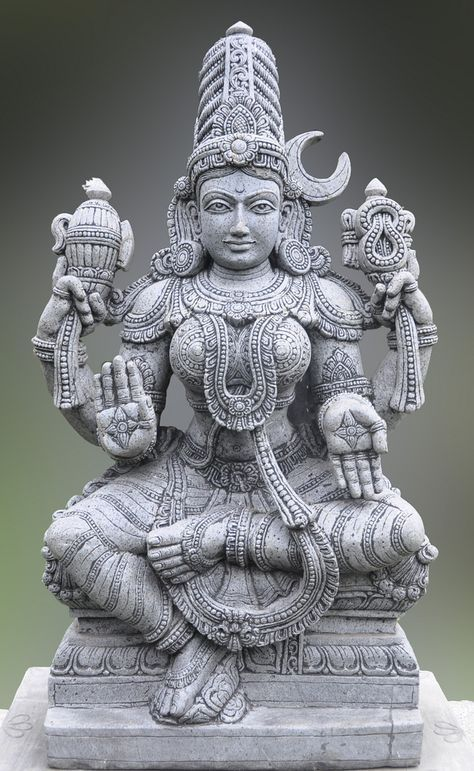

fake history passed on
Most facts and myths about Hinduism are fake and meant to spread rumors about how our religion is known as a "beastly" religion.

Topic 1
The 36 million gods rumor

Topic 2
The system that changed India

Topic 3
"Cow worship"

Topic 4
"Demonic rituals"

Topic 5
We waste nature's gifts

Topic 6
We worship idols as gods